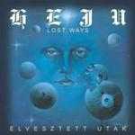

| Artist: | Heju |
| Title: | Elvesztett Utak (Lost Ways) |
| Label: | Periferic BGCD 111 |
| Length(s): | 59 minutes |
| Year(s) of release: | 2002 |
| Month of review: | [03/2003] |
| 1) | Introduction | 3.14 |
| 2) | The Darkest Night | 5.50 |
| 3) | Eden | 5.15 |
| 4) | Infinite Space | 7.14 |
| 5) | Being With You | 6.05 |
| 6) | Definite Winner We Are | 4.44 |
| 7) | Legendary East | 5.14 |
| 8) | Daydream | 3.51 |
| 9) | Lost Ways | 3.56 |
| 10) | Lightyear-away Wishes | 4.58 |
| 11) | Stars Are Waiting | 3.15 |
| 12) | Stew Path | 5.11 |